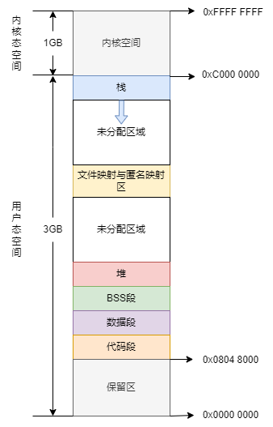
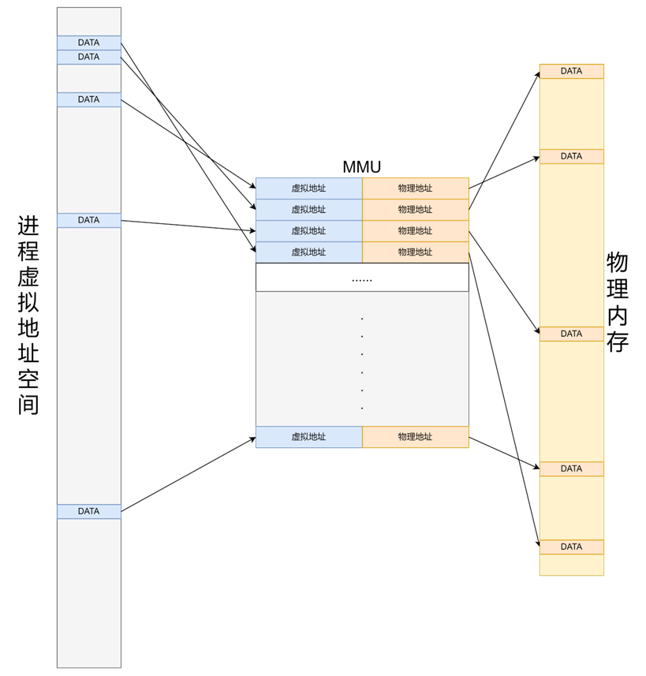
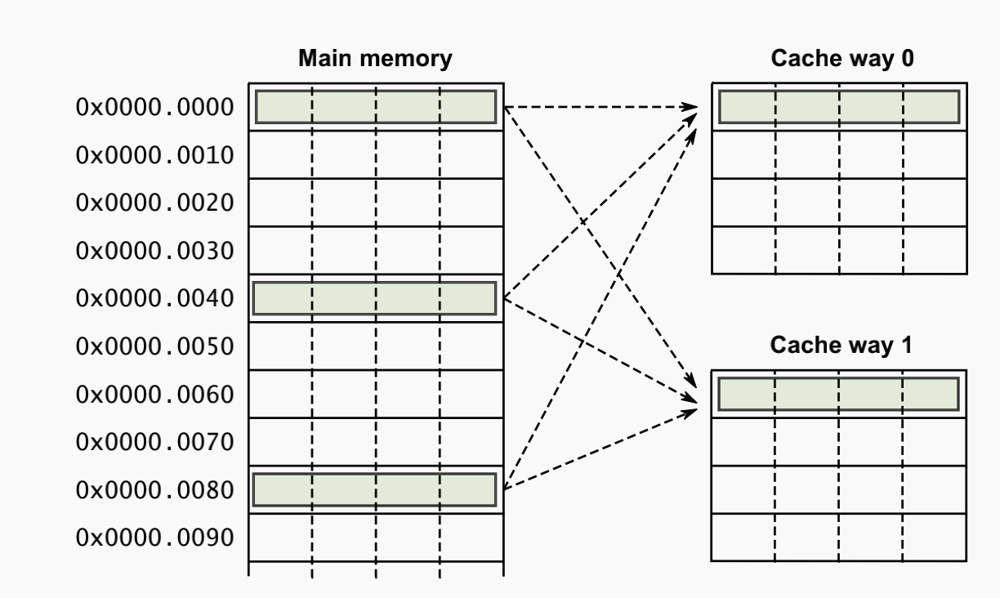
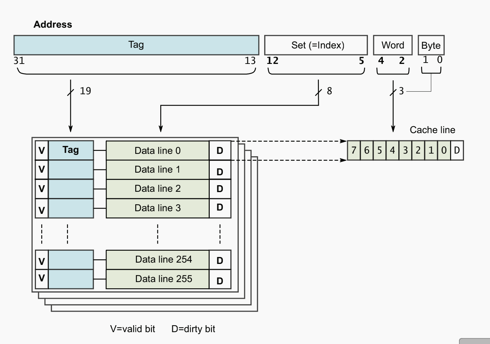
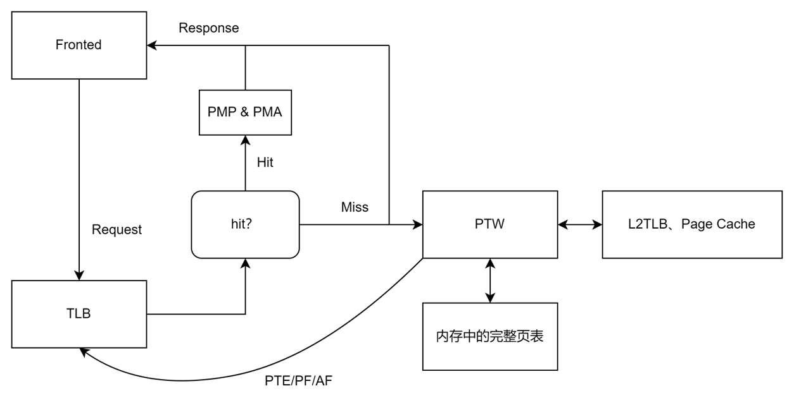

ITLB
TLB 功能概述
现代操作系统通常采用虚拟内存管理机制（Virtual Memory Management），在处理器中对应需要内存管理单元（MMU，Memory Management Unit）来进行虚实地址的映射。MMU 负责处理 CPU 的内存访问请求，其功能包括虚实地址的映射、内存保护、CPU 高速缓存控制等。
虚实地址的映射是以页（Page）为单位的。在物理内存管理中，内核会将整个物理内存空间划分为一个一个的页帧（Page Frame），一般情况下页帧大小为 4KB，称为一个物理页帧，内核会将每一个物理页帧进行编号（PFN，Page Frame Number），每个页帧有唯一确定的 PFN。对于一个进程来说，如果它直接使用物理地址构建自己的地址空间，那么作为进程就需要关心每一个变量存放在哪一个物理地址，也就是说程序员需要清楚数据在内存中的具体布局，还需要每次都要考虑内存的分配问题；同时，对于多个进程同时进行的情况，哪些数据是共享的，如何避免地址冲突等等都会成为问题。

MMU 为每个进程创建自己的虚拟地址空间，存储虚实地址的映射，在进程的视角看来它独享一段确定的（通常是连续的）地址，避免了其它进程的干扰；同时提供了虚实地址转换功能，这使得进程不必关心实际的物理地址在哪里，只需要对自己的地址空间进行操作。同时，对于一个进程来说，每次访问内存时并不是访问整个虚拟内存空间，因此进程实际需要占用的物理内存大小可以小于其虚拟地址空间的大小，由操作系统来决定要把哪一部分留在内存中，将剩余部分保存在磁盘中，在需要时再加载进入内存，极大的扩展了可用内存空间。
程序局部性原理，是计算机科学术语，指程序在执行时呈现出局部性规律，即在一段时间内，整个程序的执行仅限于程序中的某一部分。相应地，执行所访问的存储空间也局限于某个内存区域。局部性原理又表现为：时间局部性和空间局部性。
- 时间局部性是指如果程序中的某条指令一旦执行，则不久之后该指令可能再次被执行；如果某数据被访问，则不久之后该数据可能再次被访问。
- 空间局部性是指一旦程序访问了某个存储单元，则不久之后，其附近的存储单元也将被访问。

这样的由 MMU 创建的并负责维护的由虚拟地址指向物理地址的映射也将成为一项存储在一个物理页帧中，MMU 为了访问这样的物理页帧也需要一个根页表，根页表中存储着指向这些物理页帧的页表项（PTE），称为叶子 PTE。一个 PTE 的长度一般为 64 Bit（8 Bytes），而每一个一般物理页帧的大小为 4KB，这也就意味着一个物理页帧最多可以存储 4KB/8B = 2^9 个 PTE，因此根页表可以索引的范围即为 2^9 × 4KB = 2MB。2MB 的页表并不能满足内存日益增大的需要，在香山中实现的 SV48 即采用了四级页表的形式，通过四级的查询最终得到物理地址，每一级页表都能够索引 2^9 个下一级页表，最终找到需要的映射。四级页表下能够索引的地址范围达到了 2^9 × 2^9 × 2^9 × 2MB = 256TB。而页表本身也会比较大，如果存满的话大小会达到 4KB + 2^9 × 4KB + 2^9 × 2^9 × 4KB + 2^9 × 2^9 × 2^9 × 4KB = 537921540KB ≈ 513GB。当然，不是说每一级页表都要填满，页表的四级结构可以理解为一个多叉树形结构，只有需要用到的才会实际使用，很多的分支都不需要使用，因此页表的大小是可变的。
页表一般很大，需要存放在内存中，而处理器每一次访问内存的请求都需要先访问页表查找对应的物理页号然后再去读取所需数据，因此在不发生缺页的情况下，每次访存操作都需要两次访问内存才能得到物理地址，然后再次访问才能得到需要的数据。为了减少多次访存造成的开销，引入了地址转换后援缓存器（TLB，Translation Lookaside Buffer）。MMU 通常借助 TLB 来进行虚实地址的转换。TLB 一般是相连高速缓存（associative cache），相当于页表的 Cache，负责将最可能会用到的页表项对应的映射（虚拟地址与对应的物理地址）存储下来；在查找页表时首先查找 TLB 内存储的映射，如果没有命中再去查找内存中存储的完整页表。
同 Cache 一样，TLB 中页表项的组织方式一般有直接映射、全相联映射、组相连映射三种方式。直接映射一般通过模运算匹配，例如对昆明湖 48 行的 TLB 来说，其第 1 块只能对应内存的第 1/49/97/…/(n×48+1) 块，硬件结构简单、成本低、转换速度快，但是 TLB 表项利用率低，TLB miss 频繁，只适用于 TLB 大小与页表大小较接近的情况。全相联映射则不同，内存中的所有表项可以存放在 TLB 中的任意一项中，可以充分利用 TLB 的空间，冲突概率更低，但因此查找开销较高，适用于小容量 TLB。组相联映射是一种折中，可以二路组相联、四路组相联等。在香山的 TLB 模块中提供了丰富的参数配置，其中即包括采取哪一种相连方式，可以通过传入参数自行配置。本次验证的 ITLB 即采用 48 项全相联的结构。
 
香山的 MMU 模块由 TLB、Repeator、L2TLB、PMP&PMA 组成，其中 L2TLB 又包含了 Page Cache、Page Table Walker、Last Level Page Table Walker、Miss Queue 和 Prefetcher。在核内每次进行内存的操作（读写）时都需要通过 MMU 模块进行虚实地址的翻译，而 TLB 将被实例化为 ITLB（前端取指）和 DTLB（后端访存）。以 ITLB 为例，每当 ICache 或 IFU 需要进行取指操作，会先向 ITLB 发送一个地址转换请求，把需要转换的虚拟地址发给 ITLB；ITLB 接收到请求后就要查找自己存储的表项里有没有这个虚拟地址对应的映射，如果有的话就输出对应物理地址（paddr），之后由 PMP&PMA 模块检查对该物理地址的访问是否有效（包括地址是否有效、访问者是否有访问权限、页表属性等，其中对 ITLB 来说由于取出来的物理地址是待执行的指令，需要检查是否可以执行），检查通过后就可以把物理地址返回给前端。如果 ITLB 发现自己没有存储这样的表项，那么立即回应 miss，并同时发起 PTW 请求。前端接收到 miss 信号后会通过一些调度策略重新发起访问，在香山中体现为 miss 后不断重新给 TLB 发请求直到 hit。PTW 请求将交由 Page Table Walker 来执行，通过一些策略访问 L2TLB、Page Cache、内存中的完整页表，之后把访问到的 PTE（页表项）发回给 TLB（如果 PTW 都找不到那么会发生 Page Fault，同样返回给 TLB，TLB 收到 Page Fault 后会上报并由操作系统等从磁盘中加载页面）。TLB 接收到 PTE 的同时将 PTE 填充进自己的缓存中并向前端返回物理地址，前端才能通过该物理地址找到对应的指令。

香山实现了二级 TLB，包括 TLB 与 L2TLB。同样类似于 Cache 与 L2Cache，TLB（一级 TLB）通常是小容量、高速缓存，直接与处理器核心连接，用于加速最近访问过的虚拟地址到物理地址的转换；L2TLB（二级 TLB）容量较大，速度稍慢，但比直接访问内存要快。L2TLB 用来缓存更多的页表项，减少一级 TLB 未命中（TLB Miss）时对内存的频繁访问，香山目前有 1 个 ITLB 和 3 个 DTLB，都与同一个 L2TLB 连接。在这种二级结构下，TLB 未命中时将会首先查找 L2TLB，之后如果再次未命中才去访问内存，可以有效提高地址转换的命中率和性能。由于在 TLB 与 L2TLB 之间有着一定的物理距离，因此在 TLB 向 L2TLB 发出读取请求的时候需要进行加拍，这项工作交给了 MMU 中的 repeater 进行，是 TLB 与 L2TLB 之间的一个请求缓冲。同时，repeator 还需要负责对 TLB 向 L2TLB 发送的请求进行过滤（即 Filter 的功能），把重复的请求过滤掉，以减少 L2TLB 性能损失。
昆明湖架构支持 RISC-V 手册中定义的 Hypervisor 扩展，即 H 扩展。H 扩展为处理器提供了虚拟化的支持，即允许虚拟机运行在主机上，此时虚拟机将与主机共享 TLB，那么在 MMU 中也需要进行相应的调整与支持。TLB 需要能够同时容纳多个虚拟机的条目并做到隔离，同时需要引入 Hypervisor Page Table Walker（HPTW）用于遍历虚拟机的页表。
在 MMU 模块中还需要实现 PMP（Physical Memory Protection）与 PMA（Physical Memory Access）检查，不过这与 TLB 无关，在实现中无论请求是否有效或有足够权限，都会通过 TLB 先进行地址转换，之后再把转换的结果（物理地址）送到 PMP&PMA 模块进行权限检查。
验证功能点列表及说明
此处将给出划分功能点及测试点的示例。如果您划分了新的功能点，请及时与我们沟通，我们会根据沟通结果修正功能点列表。测试点原则上可根据验证实际情况自行划分，此处仅给出示例。
功能点1：TLB接收请求
功能说明
TLB 应当正常接收来自 IFU 与 ICache 的取指令请求，查找自身页表并作出适当的反应：miss 情况下返回 miss 并同时向 PTW 发送遍历请求，hit 情况返回正确结果。验证时此处应关注 TLB 做出的反应，无需关注请求本身的多种情况。
测试点示例
| No. | 名称 | 说明 |
|---|---|---|
| 1.1 | 接收来自 ICache 请求（requestor0、1） | ITLB 根据请求查找自身缓存 TLBuffer，返回 hit/miss 结果 |
| 1.2 | 接收来自 IFU 请求（requestor2） | 注意此处为阻塞式访问，每次访问后若 miss 应当 reset 后再次访问 |
| 1.3 | 接收条件判断（requestor0、1） | valid 信号 |
| 1.4 | 接受条件判断（requestor2） | valid-ready 信号 |
功能点2：TLB miss 处理
功能说明
miss 情况下发送页表遍历请求，额外需要注意边界情况下的请求处理，保证 TLB 发送的 PTW 请求正确。
测试点示例
| No. | 名称 | 说明 |
|---|---|---|
| 2.1 | 返回 miss 结果 | 比对后发现 miss 并返回 |
| 2.2 | 发起 PTW req（同时检验 PTW req valid 0/1） | 从端口 0/1 发起页表遍历请求 |
| 2.3 | 发起 PTW req（同时检验 PTW req valid-ready 2） | 从端口 2 发起页表遍历请求 |
| 2.4 | 不同情况下发起 PTW req | 改变 CSR（vsatp、hgatp），依然能够正常发送请求 |
| 2.5 | PTW resp valid 信号有效 | 检验该信号是否正常 |
| 2.6 | 重填 nonStage 条目，之后能正确访问 | 无 |
| 2.7 | 重填 OnlyStage1 条目，之后能正确访问 | 无 |
| 2.8 | 重填 OnleStage2 条目，之后能正确访问 | 无 |
| 2.9 | 重填 allStage 条目，之后能正确访问 | 无 |
功能点3：TLB hit 处理
功能说明
hit 情况下返回查询到的物理地址。requestor2 应当结束阻塞。
测试点示例
| No. | 名称 | 说明 |
|---|---|---|
| 3.1 | 主机查询得到物理地址 | paddr |
| 3.2 | 虚拟机查询得到物理地址 | gpaddr |
| 3.3 | 虚拟机查询得到中间物理地址 | IPA |
功能点4：替换策略
功能说明
根据文档说明，香山的 ITLB 使用 PLRU 替换策略，具体实现时使用的是外部提供的库。验证时可自学 PLRU 算法，并设计合理策略。
测试点示例
| No. | 名称 | 说明 |
|---|---|---|
| 4.1 | 填满后持续重填随机次数 | 建议建立参考模型进行对比 |
| 4.2 | 随机 hit/miss 一段时间 | 建议建立参考模型进行对比 |
功能点5：TLB 缓存大小
功能说明
检验 TLB 是否能够支持理论最大（48*8）项页表条目的存储。注意 PLRU 替换策略将导致一定情况下不能填满，验证中无需考虑因为该策略导致的未填充满。
测试点示例
| No. | 名称 | 说明 |
|---|---|---|
| 5.1 | 顺序填充至满 | 检验最终能够存储的最大条目数，这将直接影响 TLB 加速取指的效率 |
| 5.2 | 乱序随机 | 模拟应用场景，记录并检验条目数 |
功能点6：TLB 压缩
功能说明
支持 TLB 压缩，具体可见文档。注意保证随机性。
测试点示例
| No. | 名称 | 说明 |
|---|---|---|
| 6.1 | 压缩 8 项条目 | 一个压缩条目内的 8 项页表项都可以正常 hit |
| 6.2 | 全满压力测试 | 全部填满时可连续命中 |
| 6.3 | idx 随机测试 | 检测对应 idx 信号是否有效 |
功能点7：刷新
功能说明
TLB 模块需要在进程切换等场景下频繁刷新，也需要接收定向刷新指令刷新指定条目。验证中要建立填入-刷新-检验miss情况的流程，建议自定义函数完成。注意页表属性 Global 的影响，自行制定合适的策略。
测试点示例
| No. | 名称 | 说明 |
|---|---|---|
| 7.1 | SFENCE rs1=0 rs2=0 | 刷新全部条目 |
| 7.2 | SFENCE rs1=0 rs2=1 | 刷新指定条目 |
| 7.3 | SFENCE rs1=1 rs2=0 | 刷新指定地址空间 |
| 7.4 | SFENCE rs1=1 rs2=1 | 刷新指定地址空间的指定条目 |
| 7.5 | 带 flushpipe 的 Sfence | 清空流水线 |
| 7.6 | SFENCE hv=1/hg=1 | 刷新虚拟机的条目 |
| 7.7 | flushPipe0 | 清空流水线0 |
| 7.8 | flushPipe1 | 清空流水线1 |
| 7.9 | flushPipe2 | 清空流水线2 |
| 7.10 | satp.changed | 按一定策略刷新 |
| 7.11 | vsatp.changed | 按一定策略刷新 |
| 7.12 | hgatp.changed | 按一定策略刷新 |
功能点8：Reset
功能说明
保证正常复位。TLB 工作流程涉及多个周期，需保证在各个阶段中执行 reset 均能正常复位。
测试点示例
| No. | 名称 | 说明 |
|---|---|---|
| 8.1 | Reset 复位 | 检查所有信号按预期复位 |
| 8.2 | 请求同时复位 | 检查所有信号按预期复位 |
| 8.3 | resp 同时复位 | 检查所有信号按预期复位 |
功能点9：权限检查
功能说明
TLB 并不涉及复杂的页属性检查，仅涉及用户态/内核态的权限。由于 ITLB 存储的全部为指令页，页属性必须全部可执行。
测试点示例
| No. | 名称 | 说明 |
|---|---|---|
| 9.1 | 主机状态下（U/S）访问权限检查 | U 只能访问 U=1，S 只能访问 U=0 |
| 9.2 | 虚拟机状态下（VU/VS）访问权限检查 | VU 只能访问 U=1，VS 只能访问 U=0 |
| 9.3 | 权限切换时的行为 | IT级别验证时报告权限切换时会出现一个信号异常，可重点关注 |
| 9.4 | X=0 | 页面不可执行时的行为 |
功能点10：异常处理
功能说明
ITLB 在异常方面承担的主要职责就是上报。当下层模块报告 GPF 时，由于 ITLB 不存储中间物理地址，此时重填需要首先发送一个带 GetGPA 标志的重填，标志当前重填请求是请求的虚拟机物理地址，PTW 会把这个请求标志发送回来，带该标志的 PTW resp 不会被存入 TLBuffer。
测试点示例
| No. | 名称 | 说明 |
|---|---|---|
| 10.1 | s1-pf | 主机缺页异常 |
| 10.2 | s1-af | 主机访问权限异常 |
| 10.3 | s2-gpf | 虚拟机缺页异常 |
| 10.4 | s2-gaf | 虚拟机访问权限异常 |
| 10.5 | getGPA 信号相关 | 验证中自行拆分 |
功能点11：隔离
功能说明
地址空间隔离，通过 asid、vmid 实现进程、虚拟机之间的隔离。
测试点示例
| No. | 名称 | 说明 |
|---|---|---|
| 11.1 | 进程间隔离 | 无 |
| 11.2 | 虚拟机间隔离 | 无 |
| 11.3 | 虚拟机的进程间隔离 | 无 |
功能点12：并行访问
功能说明
模块包含 3 个端口，其访问是可以同时接收的，但是TLB的查询必须按序。TLB会将接收的请求暂存，以队列形式处理，当然 requestor2 作为阻塞式访问不参与这个过程。在实际场景下，对与 TLB miss 的情况，ICache 会自行组织重新持续发送请求。
测试点示例
| No. | 名称 | 说明 |
|---|---|---|
| 12.1 | 同时 hit | 三个预期会 hit 的请求同一拍进入 TLB |
| 12.2 | 同时 miss | 三个预期会 miss 的请求同一拍进入 TLB |
| 12.3 | 随机顺序回填 | 模拟实际场景持续发送请求，并以随机顺序回填 |
| 12.4 | 发送请求同时回填请求的地址 | 在同一拍对同一个地址发送请求&回填 |
功能点13：大小页支持
功能说明
TLB 支持保存全部大小页，不同 level 的页面都应该可以存入 TLB 中。
测试点示例
| No. | 名称 | 说明 |
|---|---|---|
| 13.1 | level=0 | 无 |
| 13.2 | level=1 | 无 |
| 13.3 | level=2 | 无 |
| 13.4 | level=3 | 无 |
功能点14：时序
功能点说明
检验 TLB 时序，保证每拍的信号级别行为正确。
测试点示例
| No. | 名称 | 说明 |
|---|---|---|
| 14.1 | 请求命中时序（requestor0、1） | 无 |
| 14.2 | 请求命中时序（requestor2） | 无 |
| 14.3 | 请求miss时序（requestor0、1） | 无 |
| 14.4 | 请求miss时序（requestor2） | 无 |